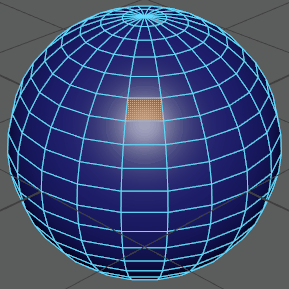
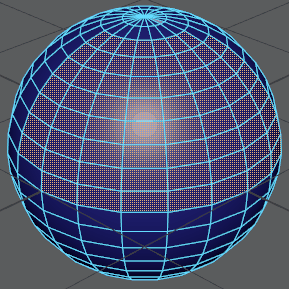

- 全部(All)
- 基于当前选择模式选择场景中的所有对象或组件。在对象模式下，所有对象都将被选中。在组件模式下，所有组件都将被选中。另请参见选择对象或组件。
热键：Ctrl+Shift+A。
- 全部按类型(All by Type)
- 该子菜单中的项目会选择场景中特定类型的每个对象。
- 取消选择全部(Deselect All)
- 在一个操作中即可取消您的选择并取消亮显所有选定的对象。
热键：Alt + D。
- 层次(Hierarchy)
- 选择当前选择的所有父对象和子对象（场景层次中当前选定节点下的所有节点）。
请参见场景层次。
- 反转(Inverse)
- 选择所有未选定对象，并取消选择所有选定对象。
热键：Ctrl + Shift + I。
- 类似(Similar)
- 处于组件模式时，“选择类似对象”(Select Similar)将选择与当前选择类型相似的多边形组件（顶点、边和面）。在对象模式下时，该选项将选择该场景中相同节点类型的其他对象。建模包含许多相似面角度和面积的非交互式对象时，“选择类似对象”(Select Similar)将有用。
“相似容差”(Similarity Tolerance)选项控制组件必须与当前选择中组件达到什么样的相似度才能被选中。“选择类似对象”(Select Similar)根据每个组件相对于相邻的形状/方向对其进行解算。默认情况下，将该值设置为 0.001。“相似容差”(Similarity Tolerance)设置值越高，可以选择越多组件。
注： “相似容差”(Similarity Tolerance)仅适用于组件选择。 - 增长(Grow)
-
从多边形网格上的当前选定组件开始，沿所有方向向外扩展当前选定组件的区域。扩展选择是取决于原始选择组件的边界类型选择。
例如，如果有一个由四边多边形（四边形）组成的多边形网格且选定了一个内部顶点，然后选择“选择 > 增长”(Select > Grow)，将在网格上选择选定顶点周围的相邻八个顶点（因为这些顶点会在选定顶点周围形成边界）。继续扩大多边形选择时，选择区域将向外扩展。
热键：Shift + .（句点）
注： “增长”(Grow)命令可逐渐撤消。例如，如果扩大区域多次，则每个命令都可撤消。提示： 可以从按住 Ctrl 键并右键单击选定的多边形组件时出现的上下文相关多边形标记菜单中访问许多多边形选择功能。 - 收缩(Shrink)
-
从多边形网格上的当前选定组件在所有方向上向内收缩当前选定组件的区域。减少的选择区域/边界的特性取决于原始选择中的组件。
例如，如果在方形栅格的形状中，有一个多边形网格（它由已选定九个内部顶点的四边形构成），然后选择“选择 > 收缩”(Select > Shrink)，那么形成当前选择上的边界的八个顶点在网格上会变为未选定，使单个顶点保持选定状态。如果继续收缩选择，最终不会选定任何对象。
注： “收缩”(Shrink)命令可逐渐撤消。例如，如果收缩区域多次，则每个命令都可撤消。 - 快速选择集(Quick Select Sets)
- 该子菜单中的项目对应于使用创建 > 集 > 快速选择集(Create > Sets > Quick Select Set)创建的快速选择集。使用此菜单可以快速地在公用选择间进行切换。
另请参见保存和重用选择。
类型
- 对象/组件(Object/Component)
- 在对象和组件之间切换选择模式。也可按 F8 热键选定该功能。
另请参见选择多边形组件。
多边形
- 组件
- 通过此子菜单中的选项，可以激活组件选择模式：“顶点”(Vertex) (F9)、“边”(Edge) (F10)、“面”(Face) (F11)、“顶点面”(Vertex Face) (Alt+F9)、UV (F12) 或“UV 壳”(UV Shell)。
通过“多组件”(Multi-Component)模式 (F7)，可以选择顶点、边和面，而无需在选择模式之间进行更改。
也可以在建模工具包中激活组件选择模式。请参见使用建模工具包选择模式选择组件。
- 连续边
- 将选择扩展到相邻边。
选择“选择 > 连续边”(Select > Contiguous Edges) >
 以设置选择连续边选项。
以设置选择连续边选项。
- 最短边路径工具(Shortest Edge Path Tool)
- 使用“最短边路径工具”(Shortest Edge Path Tool)，可以轻松地在一个曲面网格的两个或多个顶点之间选择边路径。“最短边路径工具”(Shortest Edge Path Tool)确定任意两个选择点之间最直接的路径，并选择它们之间的多边形边。
当您展开 UV 壳并且随后需要执行“切割 UV 边”(Cut UV Edges)操作时，“最短边路径工具”(Shortest Edge Path Tool)尤其适合于在曲面网格上选择漫长且可能曲折的边路径。
另请参见选择两个顶点之间的边路径。
- 转化当前选择(Convert Selection)
- 将选定组件更改为其他组件类型。例如，如果多边形网格由四条边的多边形（四边形）构成并且选定了多个顶点，然后选择“选择 > 转化当前选择 > 到面”(Select > Convert Selection > To Faces)，则与选定顶点关联的任何面都被选中。详细信息请参见转化当前选择选项。
- 使用约束(Use Constraints)
- 支持根据用户配置的约束过滤器选择多边形。
选择“选择 > 使用约束”(Select > Use Constraints) >
以设置使用约束选项。
NURBS 曲线(NURBS Curves)
- 组件
-
- 控制顶点(Control Vertex) - 允许您在选定的 NURBS 曲线或曲面上选择控制顶点 (CV)。
- 曲线点(Curve point) - 允许您在选定的 NURBS 曲线上选择点。
- 编辑点(Edit point) - 允许您在选定的 NURBS 曲线上选择编辑点。
- 壳线(Hull) - 允许您在选定的 NURBS 曲线或曲面上选择壳线。
- 所有 CV(All CVs)
- 选择选定曲线上的所有 CV。
注： 也可以按住 Ctrl 键并单击鼠标右键，然后选择“到 CV”(To CVs)。
- 第一个 CV(First CV)
- 选择选定曲线上的第一个 CV。
注： 也可以按住 Ctrl 键并单击鼠标右键，然后选择“到第一个 CV”(To First CV)。
- 最后一个 CV(Last CV)
- 选择选定曲线上的最后一个 CV。
注： 也可以按住 Ctrl 键并单击鼠标右键，然后选择“到最后一个 CV”(To Last CV)。
- 簇曲线(Cluster Curve)
- 在曲线上为 CV 创建簇。
注： 也可以按住 Ctrl 键并单击鼠标右键，然后选择“簇”(Cluster)。
NURBS 曲面(NURBS Surfaces)
- 组件
-
- 控制顶点(Control Vertex) - 允许您在选定的 NURBS 曲线或曲面上选择控制顶点 (CV)。
- 壳线(Hull) - 允许您在选定的 NURBS 曲线或曲面上选择壳线。
- 等参线(Isoparm) - 允许您在选定的 NURBS 曲面上选择等参线。
- 曲面面片(Surface Patch) - 允许您在选定的 NURBS 曲面上选择面片。
- 曲面点(Surface Point) - 允许您在选定的 NURBS 曲面上选择点。
- 曲面 UV(Surface UV) - 允许您在选定的 NURBS 曲面上选择 UV。
- CV 选择边界(CV Selection Boundary)
- 保留已选择的外部 CV 并取消选择内部 CV。
- 曲面边界(Surface Border)
- 沿曲面边界选择 CV。边界是由 U 值和 V 值定义的。默认情况下，该操作会沿所有边界选择 CV。在此操作的选项窗口中，您可以选择要选择的边界 CV：“第一个 U”(First U)、“最后一个 U”(Last U)、“第一个 V”(First V)或“最后一个 V”(Last V)。